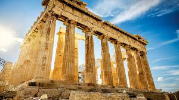
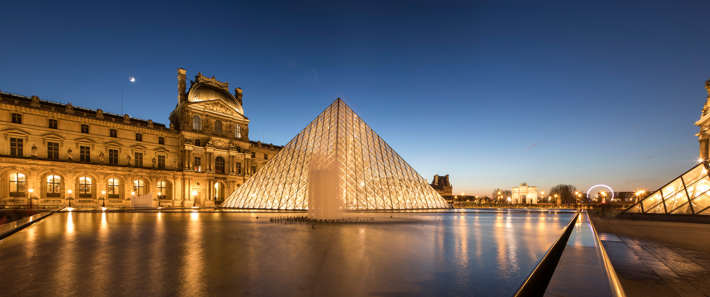
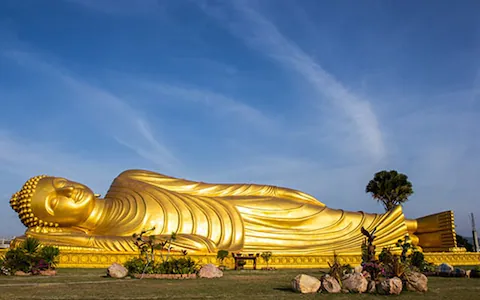

WORLD DESTINATIONS
Europe
Europe La Sagrada Famillia
 The Basílica i Temple Expiatori de la Sagrada Família, shortened as the Sagrada Família, is an under construction church in the Eixample district of Barcelona, Catalonia, Spain. It is the largest unfinished Catholic church in the world.
The Basílica i Temple Expiatori de la Sagrada Família, shortened as the Sagrada Família, is an under construction church in the Eixample district of Barcelona, Catalonia, Spain. It is the largest unfinished Catholic church in the world.
Parthenon

The Parthenon is a former temple on the Athenian Acropolis, Greece, that was dedicated to the goddess Athena during the fifth century BC. Its decorative sculptures are considered some of the high points of classical Greek art, an enduring symbol of Ancient Greece, democracy and Western civilization.
Louvre Museum

The Louvre, or the Louvre Museum, is a national art museum in Paris, France. It is located on the Right Bank of the Seine in the city's 1st arrondissement and home to some of the most canonical works of Western art, including the Mona Lisa and the Venus de Milo.
Asia
bangkok_temple_of_the_reclining_buddha

The Reclining Buddha is a representation of Buddha, just before he passed into the afterlife, lying on his side, with a calm and content expression. The statue was built in remembrance of his death and can be seen not only in Wat Pho but in several other temples in Thailand. Due to the size of Wat Pho’s Reclining Buddha, it is difficult to get a picture capturing the full length of the statue. Nonetheless, its awesomeness can never really be captured in a picture. You would have to see the real thing to appreciate just how grand it is.
Boracay Island
 Boracay is a small island in the central Philippines. It's known for its resorts and beaches. Along the west coast, White Beach is backed by palm trees, bars and restaurants. On the east coast, strong winds make Bulabog Beach a hub for water sports. Nearby, the observation deck on Mount Luho offers panoramic views over the island. Offshore, coral reefs and shipwrecks are home to diverse marine life.
Universal Studio of Japan
Boracay is a small island in the central Philippines. It's known for its resorts and beaches. Along the west coast, White Beach is backed by palm trees, bars and restaurants. On the east coast, strong winds make Bulabog Beach a hub for water sports. Nearby, the observation deck on Mount Luho offers panoramic views over the island. Offshore, coral reefs and shipwrecks are home to diverse marine life.
Universal Studio of Japan
 In December 1992, Osaka Universal Planning Inc. was established in Minato-ku, Osaka to plan and research for the development and construction of a large-scale theme park in Japan. In February 1996, the master agreement regarding planning, construction and operation of the Universal Studios Japan theme park was concluded with American corporation MCA Inc. Osaka Universal Planning Inc. was also renamed USJ Co., Ltd.[6] Licensing agreements regarding the planning, construction and operation of Universal Studios Japan was concluded with the Universal Group in 1998 and later that year, construction of the theme park officially began. The park opened on March 31, 2001.
In December 1992, Osaka Universal Planning Inc. was established in Minato-ku, Osaka to plan and research for the development and construction of a large-scale theme park in Japan. In February 1996, the master agreement regarding planning, construction and operation of the Universal Studios Japan theme park was concluded with American corporation MCA Inc. Osaka Universal Planning Inc. was also renamed USJ Co., Ltd.[6] Licensing agreements regarding the planning, construction and operation of Universal Studios Japan was concluded with the Universal Group in 1998 and later that year, construction of the theme park officially began. The park opened on March 31, 2001.
America
The Statue of Liberty
 The Statue of Liberty is a colossal neoclassical sculpture on Liberty Island in New York Harbor in New York City, in the United States. The copper statue, a gift from the people of France, was designed by French sculptor Frédéric Auguste Bartholdi and its metal framework was built by Gustave Eiffel.
San Diego Balboa Park
The Statue of Liberty is a colossal neoclassical sculpture on Liberty Island in New York Harbor in New York City, in the United States. The copper statue, a gift from the people of France, was designed by French sculptor Frédéric Auguste Bartholdi and its metal framework was built by Gustave Eiffel.
San Diego Balboa Park
 Balboa Park is a 1,200-acre historic urban cultural park in San Diego, California, United States. In addition to open space areas, natural vegetation zones, green belts, gardens, and walking paths, it contains museums, several theaters, and the San Diego Zoo.
The home of Disney World
Balboa Park is a 1,200-acre historic urban cultural park in San Diego, California, United States. In addition to open space areas, natural vegetation zones, green belts, gardens, and walking paths, it contains museums, several theaters, and the San Diego Zoo.
The home of Disney World
 The Walt Disney World Resort, also called Walt Disney World or Disney World, or simply abbreviated WDW, is an entertainment resort complex in Bay Lake and Lake Buena Vista, Florida, United States, governed by the Central Florida Tourism Oversight District. The resort is located within Orange and Osceola counties, and located closest to the cities of Winter Garden and Kissimmee in Greater Orlando. Opened on October 1, 1971, the resort is operated by Disney Experiences, a division of The Walt Disney Company. The property covers nearly 25,000 acres (39 sq mi; 101 km2) (larger than Manhattan, New York City, which is 22.7 sq mi) , of which half has been used.[5] Walt Disney World contains four separate theme parks, two water parks, two mini-golf courses, and four golf courses. There are twenty-one Disney-operated resorts on the property, and many other resorts on and near the property.
The Walt Disney World Resort, also called Walt Disney World or Disney World, or simply abbreviated WDW, is an entertainment resort complex in Bay Lake and Lake Buena Vista, Florida, United States, governed by the Central Florida Tourism Oversight District. The resort is located within Orange and Osceola counties, and located closest to the cities of Winter Garden and Kissimmee in Greater Orlando. Opened on October 1, 1971, the resort is operated by Disney Experiences, a division of The Walt Disney Company. The property covers nearly 25,000 acres (39 sq mi; 101 km2) (larger than Manhattan, New York City, which is 22.7 sq mi) , of which half has been used.[5] Walt Disney World contains four separate theme parks, two water parks, two mini-golf courses, and four golf courses. There are twenty-one Disney-operated resorts on the property, and many other resorts on and near the property.